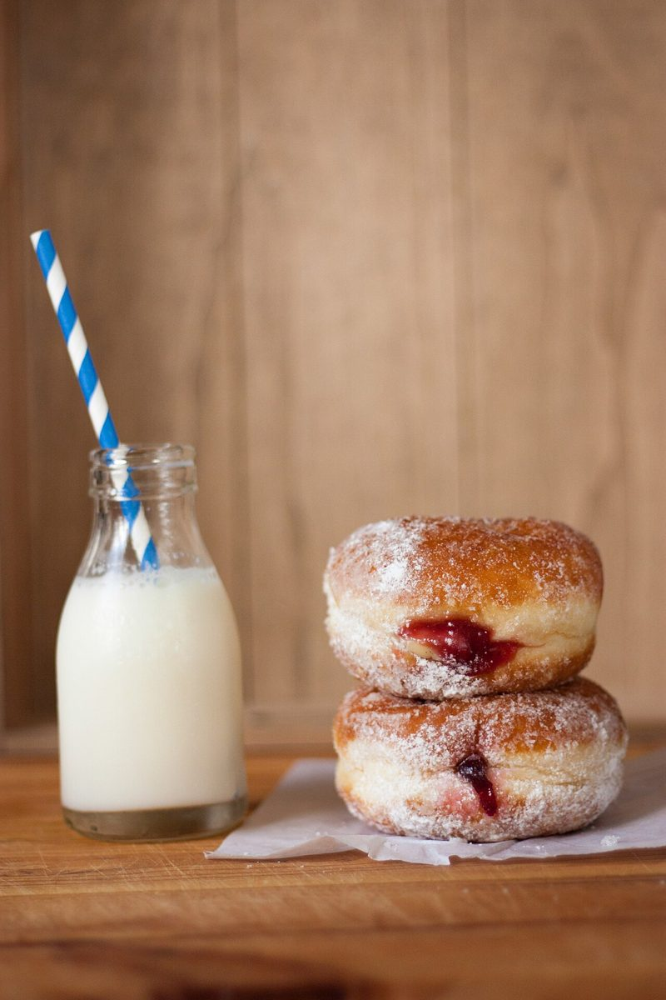

店のこと
店のこと
お店について確認できているのは、所在地とInstagramのアカウントだけです。
このページの「分かっていないこと」は、制作側の整理です。お店の実際の様子・考え・メニューとは関係がありません。
確認できていること
- 店名は「GEB」、業種はカフェ
- 所在地は山梨県北杜市高根町下黒澤3828-2(〒408-0015)
- 電話番号はなし。連絡はInstagramから
- 営業時間・定休日・メニュー・価格・ご予約・駐車場は準備中

分かっていないこと
空欄は、空欄のまま
店名の由来や、どんなお店なのかは分かりません。想像で埋めず、名刺の空欄のままにしておきます。Instagramなどで分かったことが増えたら、少しずつここへ書き足します。

